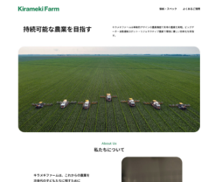
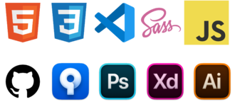

Hiroko KOIZUMI
web coderProfile
About
山が好きで月2、3回ペースで東京から地方へ山旅をしているうち、PCさえあればどこででもできる仕事に憧れるようになる。
モノ作りがしたかったことと、地道な作業が割と好きなため、Webコーダーが向いているかもと思い独学を開始。文字だけでビジュアル作品が作れることに感動し、仕事にすることを決意。
自分の好きを生かし得意を伸ばして、お客様に喜んでいただける素敵な作品を作りたいと思っています。
MyHistory
- 青森県出身。
- 大学卒業後SIerに就職するが、配属先が特殊でプログラミングはほとんどしていない。
- 旅行業界へ転職し、海外渡航手配業務に約8年間従事、年間約千人を渡航手配するが、自身はまったく休みが取れず働き方を考え直す。
- 趣味で演奏していた雅楽をさらに学ぶため音大に入学。ひとまわり年下の学生たちと4年間大学生活を送る。
- 卒業後は週末中心に演奏の仕事をしつつ、派遣社員としてOA事務を行っている。Excel・Wordとコピー機の使い方をよく聞かれる。
- 現在も仕事を続けながら、テックアカデミー「Web制作実践コース」を受講中。
Works（随時追加中）

架空の農業用ドローンの会社のWebサイト（スクール課題）
Photoshopのデザインカンプからの実装。できるだけ細かいところもデザイン通りになっているか確認しました。架空の修正課題もありましたがスムーズに完了できました。
Skills （随時追加中）

デザインカンプに沿ったコーディングができます。 jQuery/JavaScriptで簡単なアニメーションが可能です。 GitHub/sourcetreeでのソース管理は、commit、push、 mergeなどの基本的なことはできます。
各種コミュニケーションツールとOffice、Illustratorは 現業務でも使用しています。
WordPressとphpは勉強中です。